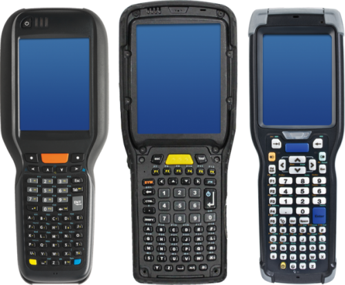
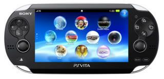
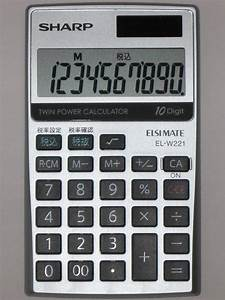

Types
links:
Main Page
Definitions
Types
Uses
Pros And Cons
Mobile computer devices are designed to be portable, often to fit on your lap
in the palm of your hand or in your pocket. With some mobile devices, you can
do many of the things you do with a desktop computer while you are away from
home or traveling. Features in mobile computer devices include batteries, video
camera, camera, voice recorder and music player. Laptop computers, tablets,
smartphones, e-readers and handheld gaming devices are five types of mobile
ocations. Many laptops on the market are designed to offer you all the functionality>
of a desktop computer, which means you can run the same software and open the same types of files.
The laptop has an all-in-one design with built-in touchpad, keyboard, monitor and speakers.
Laptops also offer you the option of connecting to a larger monitor, regular mouse and other
peripherals. This feature means you can turn a laptop into a desktop computer, but one you can
disconnect from the peripherals and carry with you wherever you go.
Most laptops have the same types of ports desktop computers have -- USB, HDMI and Firewire -- although
there are usually fewer of them to save space. However, some laptop ports are different from desktop
computers and may require an adapter to use them. For example, the monitor port on a laptop is
a Mini DisplayPort, which is smaller than the DisplayPort on a desktop computer.
(2)Tablets
 Tablets are also designed to offer portability. However, they provide you with a computing experience different
Tablets are also designed to offer portability. However, they provide you with a computing experience different
from laptops with the biggest difference being that tablets do not have a touchpad or keyboard. Instead, the
touch screen offers a virtual keyboard you use to input text, while your finger replaces the mouse as a pointer.
Tablets are bigger than a smartphone and smaller than a laptop. Like the smartphone, you can browse the Internet, carry out videoconferences, stay connected through email, read e-books, play games, watch movies, share photos and listen to music with the tablet.
Basic features of tablet computers include:
Mobile OS: Tablets run on mobile operating systems different from their desktop counterparts. Examples include
Windows, iOS and Android.
Solid-state drives: Tablets use solid-state drives, which are faster and more durable than hard disk drives.
Wi-Fi: Because tablets are optimized for Internet use, they have built-in Wi-Fi.
(3) Smartphones

A smartphone is a powerful mobile phone capable of running applications in addition to providing with phone
service. These devices have most of the features available on tablets along with cellular Internet connectivity.
Cell phone companies offer data plans that offer you Internet access anywhere with coverage.
(4)E-Readers
E-readers, or e-book readers, resemble tablet computers, but that they are mainly designed for reading digital
and downloadable documents. E-readers have either an LCD or e-ink display.
LCD Display: This is the same screen found on laptops and tablet computers. This type of screen is suitable for
viewing books and magazines with photos because the LCD screen can display colors.
E-Ink Display: E-ink is short for electronic ink and usually displays in black and white. It is designed to
offer you the look of an actual page in a book. Unlike the LCD display, the e-ink version is not backlit, so
text is readable even outdoors in full sun. E-ink displays offer a reading experience with less eyestrain.
(5)Handheld Gaming Devices

Handheld gaming devices are portable, lightweight video game consoles that have built-in game controls, screen
and speakers. With a handheld gaming console, you can play your favorite console games wherever you are,
whether on the move or while someone else is watching the TV.
(6) electronic calculator is typically a portable electronic device used to perform calculations,

ranging from basic arithmetic to complex mathematics.
The first solid-state electronic calculator was created in the early 1960s. Pocket-sized devices became
available in the 1970s, especially after the Intel 4004, the first microprocessor, was developed by Intel
for the Japanese calculator company Busicom. They later became used commonly within the petroleum industry
(oil and gas).
Modern electronic calculators vary from cheap, give-away, credit-card-sized models to sturdy desktop models with
built-in printers.
They became popular in the mid-1970s as the incorporation of integrated circuits reduced their size and cost.
By the end of that decade, prices had dropped to the point where a basic calculator was affordable to most and
they became common in schools.
Computer operating systems as far back as early Unix have included interactive calculator programs such as dc and
hoc, and calculator functions are included in almost all personal digital assistant (PDA) type devices,
the exceptions being a few dedicated address book and dictionary devices.
In addition to general purpose calculators, there are those designed for specific markets. For example,
there are scientific calculators which include trigonometric and statistical calculations. Some calculators
even have the ability to do computer algebra. Graphing calculators can be used to graph functions defined on the
real line, or higher-dimensional Euclidean space. As of 2016, basic calculators cost little, but scientific and
graphing models tend to cost more.
In 1986, calculators still represented an estimated 41% of the world's general-purpose hardware capacity to compute
information. By 2007, this had diminished to less than 0.05%